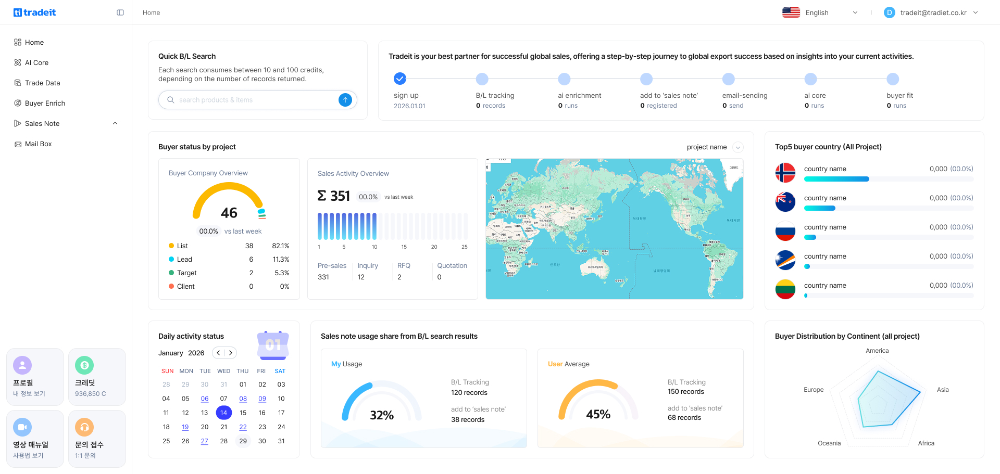
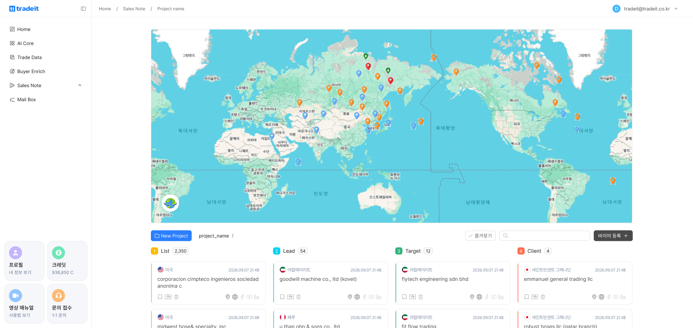
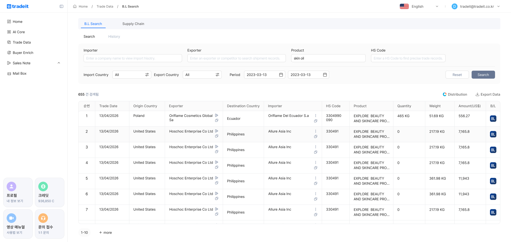
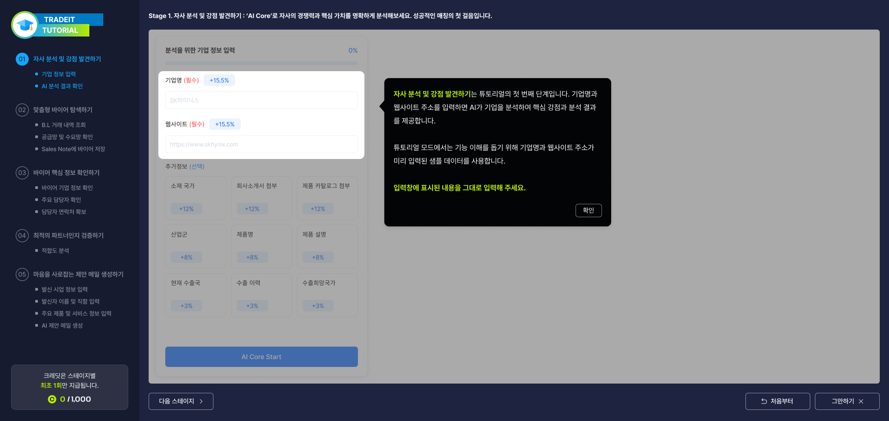
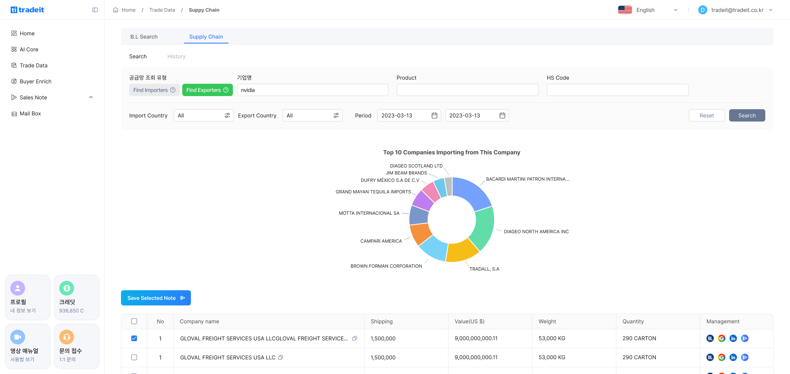
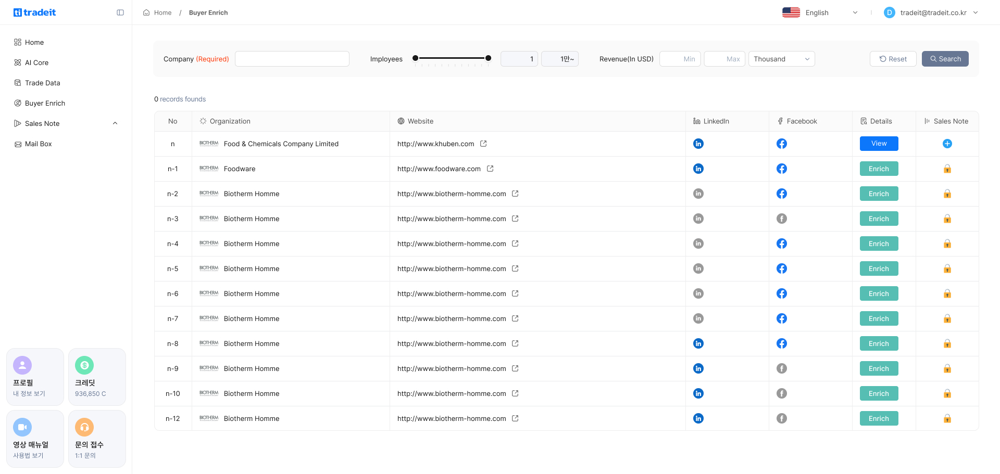
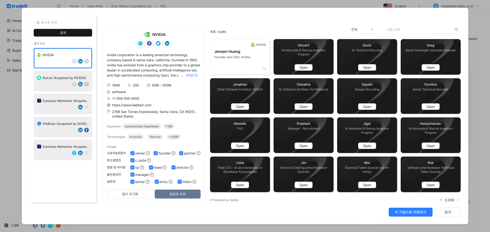
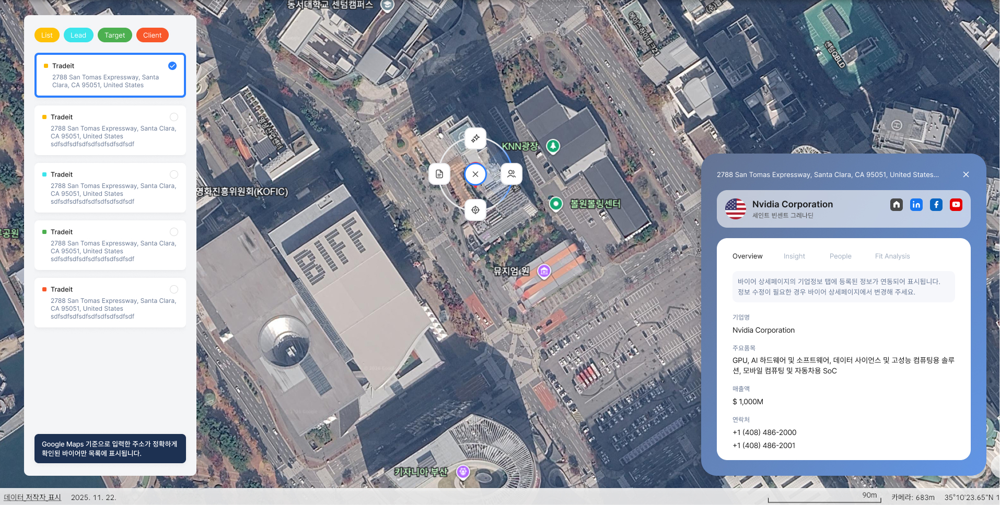

A
첫 화면에 '다음 할 일'을 둔다
홈 상단에 가입 → B/L 추적 → AI 인리치 → 세일즈 노트 등록 → 메일 발송 → AI Core → 바이어 적합도까지 7단계 여정을 놓고, 단계마다 실행 횟수를 보여줬습니다. 메뉴를 몰라도 다음에 쓸 기능을 영업 순서대로 알 수 있습니다.

/ Real Project
해외 바이어를 찾는 수출 기업의 영업 담당자를 위한 B2B SaaS를 처음부터 만들었습니다.
무역 데이터 검색, AI 기업 분석, 바이어 정보 조회, 세일즈 노트처럼 따로 떨어진 기능을 바이어 발굴 → 연락 → 거래로 이어지는 하나의 영업 흐름으로 설계하고, 화면을 React로 직접 퍼블리싱해 개발팀에 넘겼습니다.
해외 판로를 찾는 수출 기업의 해외영업 담당자. 어느 나라의 어떤 회사가 내 품목을 수입하는지 알고 싶고, 찾은 바이어에게 연락해 거래까지 이어가야 합니다.
기존 화면이 없는 새 서비스였습니다. 무역 데이터(B/L) 검색, 공급망 조회, AI 기업 분석, 바이어 · 담당자 조회, 세일즈 노트, 메일까지 기능이 많아 각각이 따로 노는 도구처럼 보이기 쉬웠습니다.
기능을 메뉴 목록이 아니라 영업 순서로 엮는 것. 지금 어디까지 왔고 다음에 무엇을 하면 되는지가 어느 화면에서든 보이게 하는 것이 목표였습니다.
디자인한 화면을 직접 컴포넌트로 만들어 넘겨, 개발자는 기능 연결에 집중할 수 있었습니다. 변경이나 새 화면이 필요하면 회의로 맞춘 뒤 디자인과 코드를 함께 고쳤습니다.
홈 상단에 가입 → B/L 추적 → AI 인리치 → 세일즈 노트 등록 → 메일 발송 → AI Core → 바이어 적합도까지 7단계 여정을 놓고, 단계마다 실행 횟수를 보여줬습니다. 메뉴를 몰라도 다음에 쓸 기능을 영업 순서대로 알 수 있습니다.

바이어 상태를 List → Lead → Target → Client 4단계로 나누고, 단계별 색을 대시보드 현황 차트와 세일즈 노트 보드의 열에 똑같이 썼습니다. 화면이 바뀌어도 색만 보고 바이어가 어느 단계인지 읽힙니다.

B/L 검색은 수입사 · 수출사 · 품목 · HS 코드와 국가 · 기간으로 좁히는 대용량 테이블입니다. 기업명 옆에 세일즈 노트 추가 버튼을 두어, 찾은 회사를 다른 화면에 옮겨 적지 않고 결과 목록에서 바로 저장하게 했습니다.

크레딧이 드는 서비스라 잔액은 사이드바에 늘 보이고, 비용은 실행 전에 적었습니다(검색 10~100, 상세 리포트 300 크레딧). AI Core 입력 폼은 항목마다 분석 완성도에 더해지는 비율(+15.5%, +12% …)을 붙여 선택 항목도 채우고 싶게 했습니다.

기능 설명 대신 5단계 실습 튜토리얼을 만들었습니다. 샘플 데이터가 들어간 실제 화면에서 자사 분석 → 바이어 탐색 → 정보 확인 → 적합도 검증 → 제안 메일까지 순서대로 해 보고, 단계를 처음 마칠 때 크레딧을 받습니다.

협회를 통해 들어오는 고객사 회원 가입이 출시 이후 지금까지 꾸준히 이어지고 있습니다.
디자인한 화면을 React로 직접 퍼블리싱해 넘기면서, 개발자가 화면을 다시 만드는 과정이 줄어 개발 일정이 짧아졌습니다.



